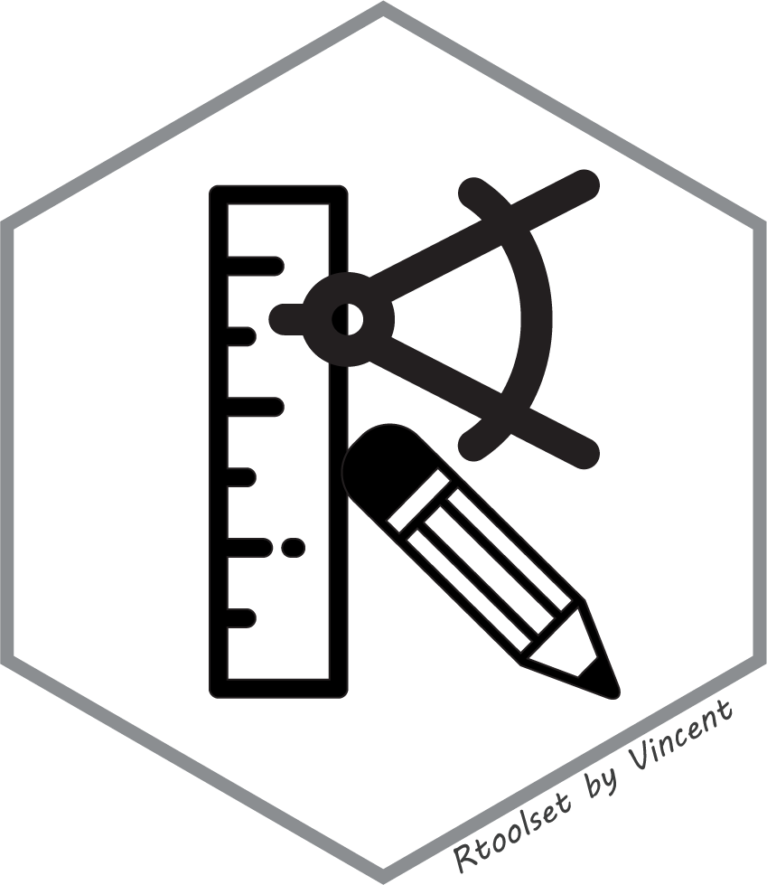

Rtoolset is a comprehensive collection of miscellaneous tools and utilities for R programming and data analysis. It provides functions for data visualization, statistical analysis, genomics, file management, and more.
The package currently provides utility functions for:
and more to come…

You can install the development version of Rtoolset from GitHub with:
# Using pak (recommended)
install.packages("pak")
pak::pak("wbvguo/Rtoolset")
# Or using remotes
install.packages("remotes")
remotes::install_github("wbvguo/Rtoolset")
library(Rtoolset)
# Example: Create an animated Christmas tree
draw_xmas_tree_panel_gif()Full Documentation Website - Browse all functions and articles (currently under construction)
Vignettes - Detailed tutorials (available after installation):
browseVignettes("Rtoolset")
vignette("getting-started", package = "Rtoolset")For function reference, use standard R help:
?draw_heart
?balanced_partition
?filter_calcpm_dgeThis package is licensed under the MIT License. See the LICENSE file for details.